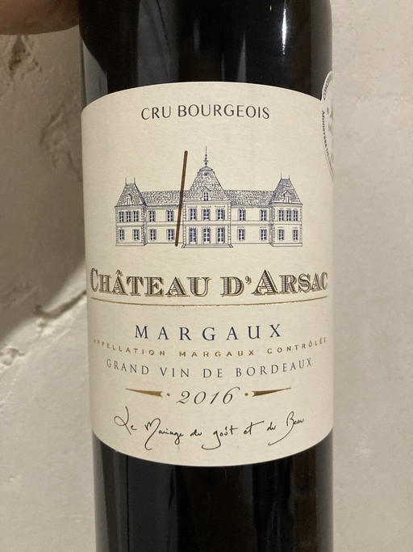

- Type
- Red Still, Dry
- Producer
- Chateau d’Arsac
- Vintage
- 2016
- Location
- France, Margaux AOC
- Grapes
- Cabernet Sauvignon, Merlot
- Alcohol
- 13.5
- Sugar
- 0.1
- Price
- 997 UAH
- Cellar
- N/A
Ratings
2022-06-03 - 7.50
More elegant than I expected. Nose full of black currant, dark plum and tobacco with hints of coffee. Well balanced, smooth with good acidity and long finish. Flavours of black currant with hint of jam. Still young, though can’t say anything about potential.